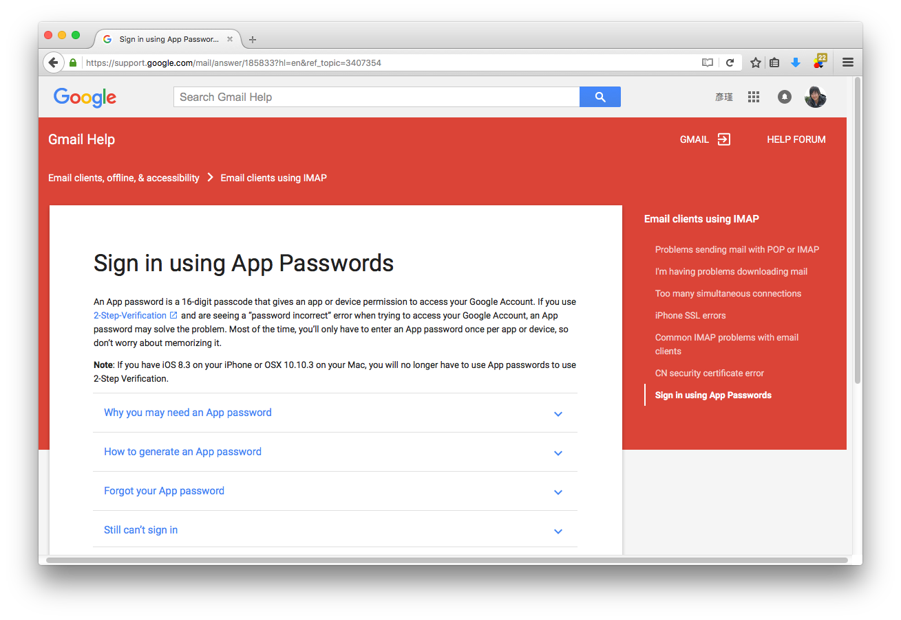
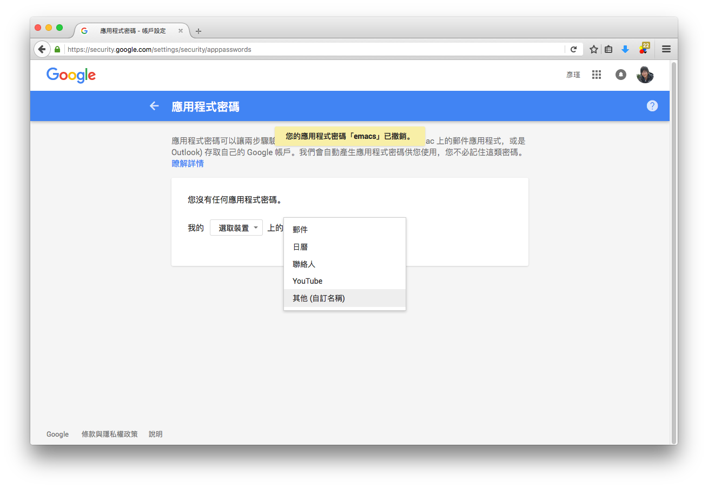
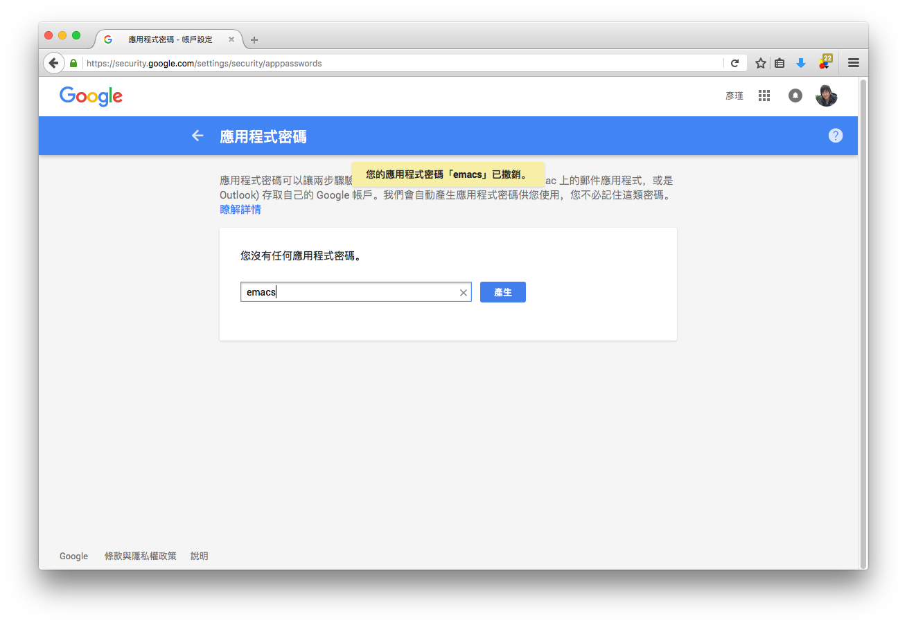
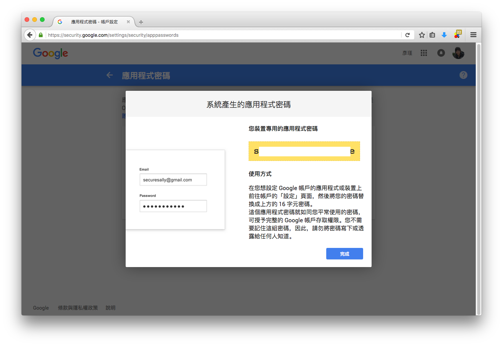
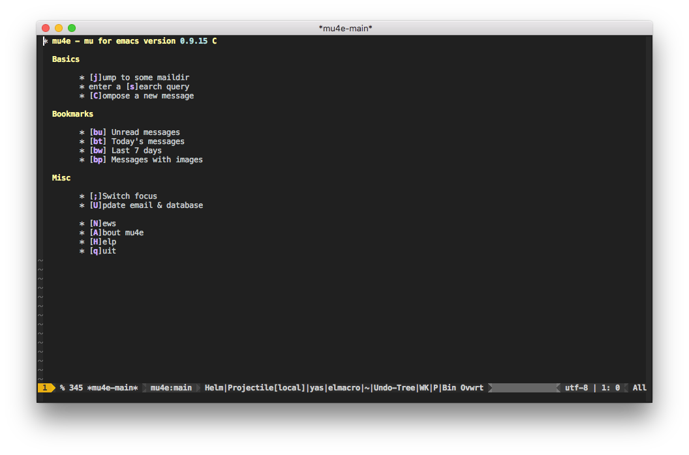
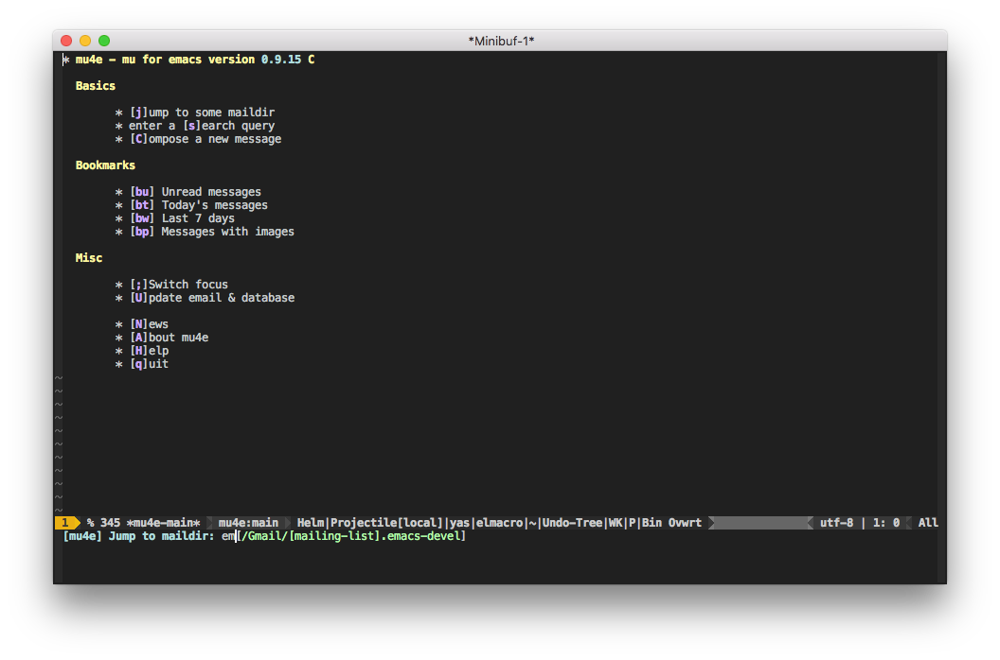
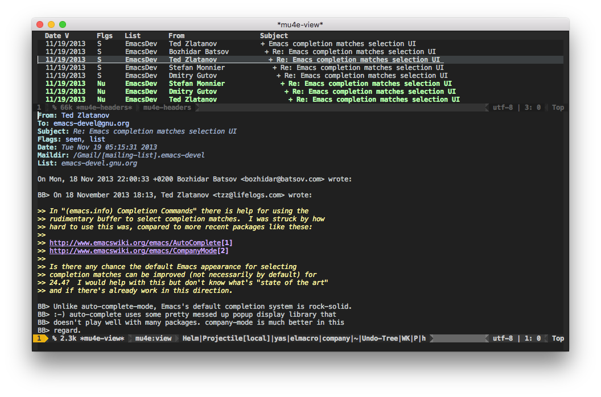
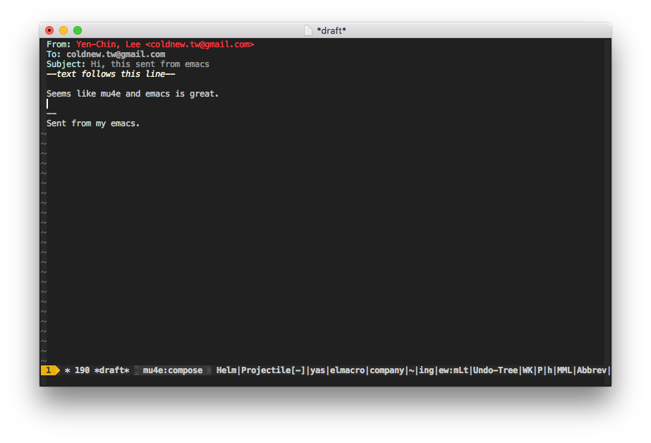
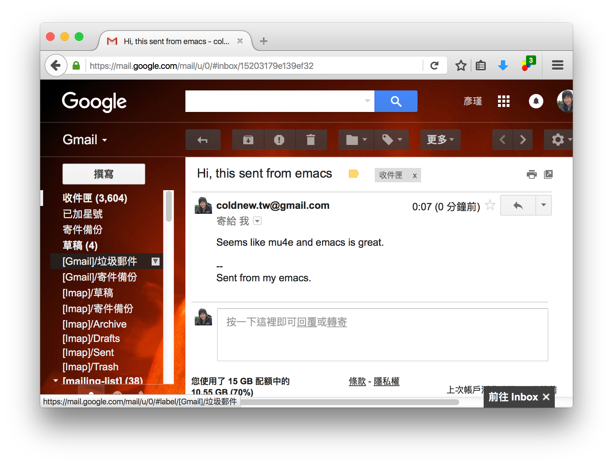

最近又重新改寫了我的 emacs 設定，捨棄掉了 spacemacs 並重新使用 org-mode 撰寫，你可以在 這裡 看到我目前的設定。
既然剛好重寫，就順便紀錄一下如何在 emacs 下進行郵件的收發，在 emacs 下我們有很多種收發電子郵件的選擇，比如 gnus 、wanderlust ，本文要說的是另外一個很多人在用並且比較好設定的 mu4e。
安裝 mu4e
mu4e 實際上是 mu 的 emacs 客戶端，因此我們真正要安裝的是 mu 這套軟體。
在 Mac OSX 中可以透過 homebrew 完成這件事情
coldnew@osx ~ $ brew install mu --with-emacs --HEAD
由於 homebrew 安裝的東西不會在 emacs 的 load-path 中，因此別忘記在你的 emacs 加上以下這段設定
(when (eq system-type 'darwin) (add-to-list 'load-path "/usr/local/Cellar/mu/HEAD/share/emacs/site-lisp/mu4e"))
在 Gentoo Linux 安裝就容易多了，也不需要什麼額外的設定，就只要打開 emacs 的 USE flag 即可
coldnew@gentoo ~ $ sudo USE="emacs" emerge net-mail/mu
安裝 offlineimap
mu 只負責進行索引，並未內建擷取信件的工具，因此你需要安裝第三方程式來幫忙下載郵件到本地端，常用的有 offlineimap 以及 mbsync ，在本文中使用 offlinemap 來負責擷取信件。
要使用 offlineimap，第一步當然是安裝他了，在 Mac OSX 中可以透過 homebrew 完成這件事情
coldnew@osx ~ $ brew install offlineimap
在我的 Gentoo Linux 則是透過 portage 去安裝
coldnew@gentoo ~ $ sudo emerge net-mail/offlineimap
設定 .offlineimaprc
安裝完成後，我們需要設定 ~/.offlineimaprc 這個檔案，這邊以收發 Gmail 為例，我的設定檔是長這個樣子的
# -*- mode: python -*- [general] accounts = Gmail maxsyncaccounts = 3 pythonfile = ~/.offlineimap.py [Account Gmail] localrepository = Gmail-Local remoterepository = Gmail-Remote [Repository Gmail-Local] type = Maildir localfolders = ~/Maildir/Gmail [Repository Gmail-Remote] type = Gmail remotehost = imap.gmail.com remoteuser = YOUR_EMAIL_ACCOUNT # <---- Change to your account remotepasseval = get_password_emacs("imap.gmail.com", "993") # <--- get password from emacs ssl = true sslcacertfile = /etc/ssl/certs/ca-certificates.crt nametrans = lambda foldername: foldername.decode('imap4-utf-7').encode('utf-8') maxconnections = 4 realdelete = yes
在這個設定檔中有幾個地方要解釋一下，首先由於 offlineimap 對中文標籤支持不好，所以我們需要一個 ~/.offlineimap.py 腳本來幫忙進行編碼的轉換，並套用到 nametrans 的設定，因此我們必須要告訴 offlineimap 說我們要載入 ~/.offlineimap.py 腳本並且套用 nametrans 規則
# [general] pythonfile = ~/.offlineimap.py # [Repository Gmail-Remote] nametrans = lambda foldername: foldername.decode('imap4-utf-7').encode('utf-8')
另外，由於我們都要在 emacs 中收發郵件了，在 .offlineimaprc 填上明碼的密碼是很蠢的事情，因此我們告訴 offlineimap 說要密碼請去和 emacs 要，這邊也設定一些規則在 ~/.offlineimap.py 中
remotepasseval = get_password_emacs("imap.gmail.com", "993") # <--- get password from emacs
設定 .offlineimap.py
於是我們該來看看 ~/.offlineimap.py 裡面到底賣什麼膏藥囉～
.offlineimap.py - 增加編碼成 UTF-8 功能
首先我們最需要的就是避免中文信件或是標籤出現問題，因此我們需要將以下這段加入到 ~/.offlineimap.py 中。
#!/usr/bin/env python import binascii import codecs def modified_base64(s): s = s.encode('utf-16be') return binascii.b2a_base64(s).rstrip('\n=').replace('/', ',') def doB64(_in, r): if _in: r.append('&%s-' % modified_base64(''.join(_in))) del _in[:] def encoder(s): r = [] _in = [] for c in s: ordC = ord(c) if 0x20 <= ordC <= 0x25 or 0x27 <= ordC <= 0x7e: doB64(_in, r) r.append(c) elif c == '&': doB64(_in, r) r.append('&-') else: _in.append(c) doB64(_in, r) return (str(''.join(r)), len(s)) # decoding def modified_unbase64(s): b = binascii.a2b_base64(s.replace(',', '/') + '===') return unicode(b, 'utf-16be') def decoder(s): r = [] decode = [] for c in s: if c == '&' and not decode: decode.append('&') elif c == '-' and decode: if len(decode) == 1: r.append('&') else: r.append(modified_unbase64(''.join(decode[1:]))) decode = [] elif decode: decode.append(c) else: r.append(c) if decode: r.append(modified_unbase64(''.join(decode[1:]))) bin_str = ''.join(r) return (bin_str, len(s)) class StreamReader(codecs.StreamReader): def decode(self, s, errors='strict'): return decoder(s) class StreamWriter(codecs.StreamWriter): def decode(self, s, errors='strict'): return encoder(s) def imap4_utf_7(name): if name == 'imap4-utf-7': return (encoder, decoder, StreamReader, StreamWriter) codecs.register(imap4_utf_7)
.offlineimap.py - 從 emacs 中獲取密碼
在我的系統中，emacs 負責進行解密 ~/.authinfo.gpg 這個透過 gnupg 加密的設定檔案，並且我的 emacs 是不關掉的，因此就直接啟動一個 emacsclient 去執行 offlineimap-get-password 這個函式 (需定義在你的 ~/.emacs.d/ 裡面)
import subprocess import re import os # # pass password from emacs # def get_output(cmd): # Bunch of boilerplate to catch the output of a command: pipe = subprocess.Popen(cmd, shell=True, stdout=subprocess.PIPE, stderr=subprocess.STDOUT) (output, errout) = pipe.communicate() assert pipe.returncode == 0 and not errout return output def get_password_emacs(host, port): cmd = "emacsclient --eval '(offlineimap-get-password \"%s\" \"%s\")'" % (host, port) return get_output(cmd).strip().lstrip('"').rstrip('"')
至於 emacs 中 offlineimap-get-password 這個函式的定義則在後面進行說明。
Mac OSX 下可能遇到的錯誤
在 Mac OSX 下使用 offlineimap 時候你可能會遇到以下的錯誤
OfflineIMAP 6.6.0
Licensed under the GNU GPL v2 or any later version (with an OpenSSL exception)
Account sync Gmail:
*** Processing account Gmail
Establishing connection to imap.gmail.com:993
ERROR: No CA certificates and no server fingerprints configured. You must configure at least something, otherwise having SSL helps nothing.
*** Finished account 'Gmail' in 0:00
Account sync Weintek:
*** Processing account Weintek
Establishing connection to www.hibox.hinet.net:993
ERROR: No CA certificates and no server fingerprints configured. You must configure at least something, otherwise having SSL helps nothing.
*** Finished account 'Weintek' in 0:00
ERROR: Exceptions occurred during the run!
ERROR: No CA certificates and no server fingerprints configured. You must configure at least something, otherwise having SSL helps nothing.
Traceback:
File "/usr/local/Cellar/offline-imap/6.6.0/libexec/offlineimap/accounts.py", line 263, in syncrunner
self.__sync()
File "/usr/local/Cellar/offline-imap/6.6.0/libexec/offlineimap/accounts.py", line 326, in __sync
remoterepos.getfolders()
File "/usr/local/Cellar/offline-imap/6.6.0/libexec/offlineimap/repository/IMAP.py", line 384, in getfolders
imapobj = self.imapserver.acquireconnection()
File "/usr/local/Cellar/offline-imap/6.6.0/libexec/offlineimap/imapserver.py", line 483, in acquireconnection
tls_level=self.tlslevel,
File "/usr/local/Cellar/offline-imap/6.6.0/libexec/offlineimap/imaplibutil.py", line 186, in __init__
super(WrappedIMAP4_SSL, self).__init__(*args, **kwargs)
File "/usr/local/Cellar/offline-imap/6.6.0/libexec/offlineimap/imaplib2.py", line 2138, in __init__
IMAP4.__init__(self, host, port, debug, debug_file, identifier, timeout, debug_buf_lvl)
File "/usr/local/Cellar/offline-imap/6.6.0/libexec/offlineimap/imaplib2.py", line 357, in __init__
self.open(host, port)
File "/usr/local/Cellar/offline-imap/6.6.0/libexec/offlineimap/imaplibutil.py", line 193, in open
"having SSL helps nothing.", OfflineImapError.ERROR.REPO)
這問題是因為 Mac OSX 沒有內建 ca-certificates.crt 這樣的驗證檔案 (!?) ，因此你必須透過 homebrew 去安裝 openssl 來取得這個檔案
coldnew@osx ~ $ brew install openssl
接著你就可以使用 /usr/local/etc/openssl/cert.pem 作為 sslcacertfile，將你的 .offlineimaprc 修改如下
sslcacertfile = /usr/local/etc/openssl/cert.pem
我自己的電腦為了可以讓 .offlineimaprc 可以同時用於 Linux 和 Mac OSX 上，我則是透過軟連結來建立 /etc/ssl/certs/ca-certificates.crt 這個檔案。
coldnew@osx ~ $ sudo ln -s /usr/local/etc/openssl/cert.pem /etc/ssl/certs/ca-certificates.crt
設定 Google 驗證
最近才發現 Google 換個驗證方式，假如你用 offlineimap 之類的軟體下載 Gmail 遇到這樣的問題，那就是你必須要照 Google 的要求進行新的驗證方式
Warning: Opening nnimap server on gmail...failed: NO (ALERT) Please log in via your web browser:
https://support.google.com/mail/accounts/answer/78754 (Failure);
Server nnimap+gmail previously determined to be down; not retrying;
首先連線到 https://support.google.com/mail/answer/185833?hl=en&rd=1 該頁面描述了產生 App password 的方法

接著就去進行你的兩步驟驗證，完成後你就可以在個人的設定頁面去設定 應用程式密碼 ，首先我們選擇其他應用程式

接著設定應用程式名稱為 emacs

完成以後你就會得到一組 16 字元 的密碼，我們將他填到 ~/.authinfo.gpg 的 YOUR_PASSWORD 欄位去。

設定 ~/.authinfo.gpg
設定完 Google 驗證並且取得你的 app 密碼後，就把你的資料填入到 ~/.authinfo.gpg 中吧，只要你的 emacs 有進行設定，他會幫你將 .gpg 結尾的檔案加密起來的。
machine imap.gmail.com login YOUR_EMAIL_ACCOUNT port 993 password YOUR_PASSWORD port 993 machine smtp.gmail.com login YOUR_EMAIL_ACCOUNT port 587 password YOUR_PASSWORD port 587
設定你的 emacs
上述工作都完成後，我們就可以準備來設定我們的 emacs 了~ 首先先加上一個函式讓 emacsclient 可以取得寫在 ~/.authinfo.gpg 的密碼
(defun offlineimap-get-password (host port) (require 'netrc) (let* ((netrc (netrc-parse (expand-file-name "~/.authinfo.gpg"))) (hostentry (netrc-machine netrc host port port))) (when hostentry (netrc-get hostentry "password"))))
接下來就是我們 mu4e 的設定，我們設定了信件存放位址為 ~/Maildir 這個資料夾，並且使用 offlineimap 進行信件的擷取功能，每 60 秒 更新一次資訊，值得一提的是由於 offlineimap 是外部程式，在擷取信件的時後並不會卡住你的 emacs。
(require 'mu4e) ; load mu4e ;; Use mu4e as default mail agent (setq mail-user-agent 'mu4e-user-agent) ;; Mail folder set to ~/Maildir (setq mu4e-maildir "~/Maildir") ; NOTE: should not be symbolic link ;; Fetch mail by offlineimap (setq mu4e-get-mail-command "offlineimap") ;; Fetch mail in 60 sec interval (setq mu4e-update-interval 60)
接下來要設定寄件夾、草稿夾等位址，注意到我在 ~/.offlineimaprc 裡面有這樣的設定
# [Repository Gmail-Local] localfolders = ~/Maildir/Gmail
因此在你的 .emacs 這邊要這樣加入設定
;; folder for sent messages (setq mu4e-sent-folder "/Gmail/Sent") ;; unfinished messages (setq mu4e-drafts-folder "/Gmail/Drafts") ;; trashed messages (setq mu4e-trash-folder "/Gmail/Trash") ;; saved messages (setq mu4e-trash-folder "/Gmail/Archive")
在我們收信的時候，有些信件可能是 HTML 的格式，因此我們使用 emacs 內建的 eww 將其轉換為純文字檔好方便閱讀，並用一些 建議 的按鍵設定
(require 'mu4e-contrib) (setq mu4e-html2text-command 'mu4e-shr2text) ;; try to emulate some of the eww key-bindings (add-hook 'mu4e-view-mode-hook (lambda () (local-set-key (kbd "<tab>") 'shr-next-link) (local-set-key (kbd "<backtab>") 'shr-previous-link)))
當然，在圖形介面下的 emacs 是可以顯示圖像的，因此你可以設定 mu4e-view-show-images 來讓 mu4e 顯示圖片
(setq mu4e-view-show-images t)
再來就是寄信的設定，這邊實際上用的是 emacs 內建的 smtp 功能，因此照著設定就好
;; SMTP setup (setq message-send-mail-function 'smtpmail-send-it smtpmail-stream-type 'starttls starttls-use-gnutls t) ;; Personal info (setq user-full-name "Yen-Chin, Lee") ; FIXME: add your info here (setq user-mail-address "coldnew.tw@gmail.com"); FIXME: add your info here ;; gmail setup (setq smtpmail-smtp-server "smtp.gmail.com") (setq smtpmail-smtp-service 587) (setq smtpmail-smtp-user "YOUR-GMAIL-ADDRESS") ; FIXME: add your gmail addr here
如果你想要設定你的簽名檔，則可以設定 mu4e-compose-signature 這個變數
(setq mu4e-compose-signature "Sent from my emacs.")
第一次使用的額外設定
第一次進行使用的時候，我們要先透過 offlineimap 來收取 Gmail 上的郵件，於是在另外一個終端機上手動執行 offlineimap 這個程式，如果你仿照我的設定，你會看到執行完 offlineimap 後，emacs 會來相你詢問 ~/.authinfo.gpg 的密碼，提供給他後 offlineimap 就開始下載郵件了
coldnew@osx ~ $ offlineimap OfflineIMAP 6.6.0 Licensed under the GNU GPL v2 or any later version (with an OpenSSL exception) Account sync Gmail: *** Processing account Gmail Establishing connection to imap.gmail.com:993 Folder [mailing-list]/linux-input [acc: Gmail]: Copy message 4371 (4369 of 9933) Gmail-Remote:[mailing-list]/linux-input -> Gmail-Local Folder [mailing-list]/emacs-devel [acc: Gmail]: Copy message 14129 (13112 of 41986) Gmail-Remote:[mailing-list]/emacs-devel -> Gmail-Local Folder [mailing-list]/Clojure [acc: Gmail]: Copy message 14012 (13123 of 36061) Gmail-Remote:[mailing-list]/Clojure -> Gmail-Local Folder [mailing-list]/linux-kernel-arm [acc: Gmail]: Copy message 2981 (2981 of 272523) Gmail-Remote:[mailing-list]/linux-kernel-arm -> Gmail-Local
郵件取得完成後，我們要讓 mu 索引所有的郵件，這邊這些動作只有第一次設立環境時需要執行，之後透過 emacs 的 mu4e 就會自動進行抓取郵件和索引的動作
coldnew@osx ~ $ mu index indexing messages under /Users/coldnew/Maildir [/Users/coldnew/.mu/xapian] \ processing mail; processed: 12300; updated/new: 12300, cleaned-up: 0 | processing mail; processed: 12375; updated/new: 12375, cleaned-up: 0
在 emacs 下觀看郵件
前面的設定都完成後，就可以執行 M-x mu4e 來啟動我們來啟動我們的 mu4e 程式，首先會進到歡迎畫面

接下來輸入 j 切換要瀏覽的信件群組

然後對你有興趣的信件按下 ENTER 後就可以看到內文囉~

更多的操作就不在這邊贅述了，請參考 mu4e Manual 。
在 emacs 下寄送信件
會收信了以後，讓我們來看看怎樣發送信件，前面說到了 mu4e 實際上是透過 emacs 內建的功能來寄送信件，因此我們只要呼叫 compose-mail 這個命令 (C-x m) 即可進入寫信件的視窗

填寫完成你的訊息後，只要輸入 C-c C-c 就會將信件寄送出去囉，這邊是我在 gmail 收到的結果

總結
我自己使用 emacs 的習慣是用他來看 mailing-list, 畢竟信件太多用 gmail 或是 app 不見的好瀏覽，私人信件才會使用 APP 或是 thunderbird 來收。對我而言在 emacs 中收信有幾個好處
高度與 emacs 整合
我可以自行設定我需要的功能(替 patch 上色)，並且收信時不需要離開 emacs。
方便寄信
除了收信以外，直接在 emacs 中寄信同時代表了我可以用自己設定好的快捷鍵來修改信件，這是非常愉快的事情。